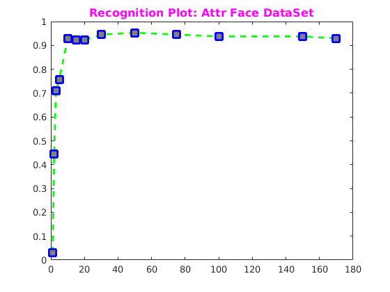
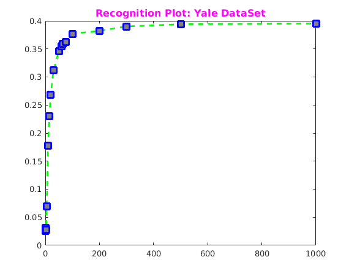
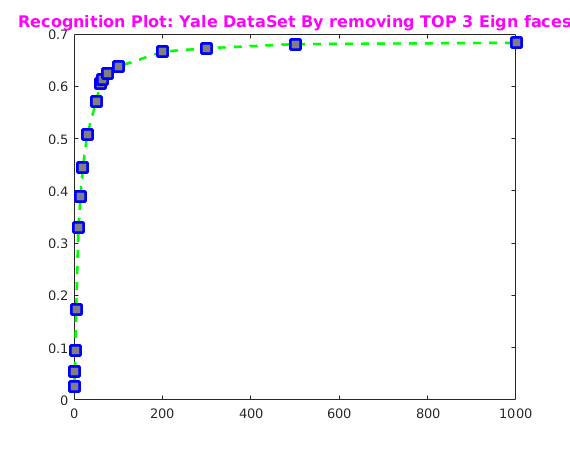

Assignment 4
CS-663 Group-163059009,16305R011
Contents
- Face recognition using Eigen Faces
- Initialization Att Face Datase
- 1. Attr_Face DataSet
- Finding the EignFace : Attr_Face DataSet
- Testing The Probe Image : Attr_Face DataSet
- Recognition Plot: Attr_Face DataSet
- 2. Yale DataSet
- Finding the EignFace : Yale Dateset
- Testing The Probe Image : Yale Dateset
- Recognition Plot: Yale Dateset
- 3. Yale DataSet - Handling Illumination Change
- Testing The Probe Image : Yale Dateset
- Recognition Plot: Yale Dateset
Face recognition using Eigen Faces
We have used PCA algorithm to find eigen faces and for optimization we have use L matrix where L = A'A
Initialization Att Face Datase
Reading the att_faces and yale database Read data will return train and test cell. Each cell contains data and its associated label.
attDirpath='../../data/att_faces'; yaleDirpath='../../data/CroppedYale'; [attrTrainImgCell,attrTestImgCell]=readData(attDirpath,'att_faces'); [yaleTrainImgCell,yaleTestImgCell]=readData(yaleDirpath,'yale'); fprintf('Reading of images Done.\n');
Reading of images Done.
1. Attr_Face DataSet
Finding the EignFace : Attr_Face DataSet
Size of train data set size is 6*32(192) images and test data size is 4*32(128) images. Here we are finding eigen faces of att_faces. It returns following :
- mean vector
- normalized eigen faces
- deviated train set from its mean (Xi-X_mean)
tic
trainImgCell=attrTrainImgCell;
testImgCell=attrTestImgCell;
[xMean,efaceNormalized,devTrainSet]=eigenFace(trainImgCell{1});
fprintf('Finding Eigen Faces.Done.\n');
toc
Finding Eigen Faces.Done. Elapsed time is 0.094006 seconds.
Testing The Probe Image : Attr_Face DataSet
Image Recognition function takes following parameters
- normalized eigen face,
- mean vector of images
- deviated train set from its mean and associated train set label
- test images
- set of k largest eigen values
Image recognition returns regonition rate i.e. how well test set is recognized w.r.t k
tic
ks=[1, 2, 3, 5, 10, 15, 20, 30, 50, 75, 100, 150, 170];
recognitionRate=imageRecognition(efaceNormalized,xMean,{devTrainSet,trainImgCell{2}},testImgCell,ks);
fprintf('Recognising Test data.Done.\n');
toc
K=1 Recognition-Rate:0.031250 K=2 Recognition-Rate:0.445312 K=3 Recognition-Rate:0.710938 K=5 Recognition-Rate:0.757812 K=10 Recognition-Rate:0.929688 K=15 Recognition-Rate:0.921875 K=20 Recognition-Rate:0.921875 K=30 Recognition-Rate:0.945312 K=50 Recognition-Rate:0.953125 K=75 Recognition-Rate:0.945312 K=100 Recognition-Rate:0.937500 K=150 Recognition-Rate:0.937500 K=170 Recognition-Rate:0.929688 Recognising Test data.Done. Elapsed time is 0.286818 seconds.
Recognition Plot: Attr_Face DataSet
Drawing Plot Plot shows the recognition rate w.r.t k
figure('name','Recognition Plot: Attr Face DataSet'); x=recognitionRate{1}; y=recognitionRate{2}; plot(x,y,'--gs',... 'LineWidth',2,... 'MarkerSize',10,... 'MarkerEdgeColor','b',... 'MarkerFaceColor',[0.5,0.5,0.5]); title('\fontsize{12}{\color{magenta}Recognition Plot: Attr Face DataSet}');
2. Yale DataSet
Finding the EignFace : Yale Dateset
Size of train data set size is 40*38 images and test data size is 20*38 images. Here we are finding eigen faces of Yale Dataset. EigenFace is calculated using SVD. It returns following :
- mean vector
- normalized eigen faces
- deviated train set from its mean (Xi-X_mean)
tic
trainImgCell=yaleTrainImgCell;
testImgCell=yaleTestImgCell;
[xMean,efaceNormalized,devTrainSet]=eigenFaceUsingSVD(trainImgCell{1});
fprintf('Finding Eigen Faces.Done.\n');
toc
Finding Eigen Faces.Done. Elapsed time is 26.567087 seconds.
Testing The Probe Image : Yale Dateset
Image Recognition function takes following parameters
- normalized eigen face,
- mean vector of images
- deviated train set from its mean and associated train set label
- test images
- set of k largest eigen values
Image recognition returns regonition rate i.e. how well test set is recognized w.r.t k
tic
ks=[1, 2, 3, 5, 10, 15, 20, 30, 50, 60, 65, 75, 100, 200, 300, 500, 1000];
recognitionRate=imageRecognition(efaceNormalized,xMean,{devTrainSet,trainImgCell{2}},testImgCell,ks);
fprintf('Recognising Test data.Done.\n');
toc
K=1 Recognition-Rate:0.026178 K=2 Recognition-Rate:0.031414 K=3 Recognition-Rate:0.027487 K=5 Recognition-Rate:0.069372 K=10 Recognition-Rate:0.178010 K=15 Recognition-Rate:0.230366 K=20 Recognition-Rate:0.268325 K=30 Recognition-Rate:0.311518 K=50 Recognition-Rate:0.345550 K=60 Recognition-Rate:0.354712 K=65 Recognition-Rate:0.358639 K=75 Recognition-Rate:0.362565 K=100 Recognition-Rate:0.376963 K=200 Recognition-Rate:0.382199 K=300 Recognition-Rate:0.390052 K=500 Recognition-Rate:0.393979 K=1000 Recognition-Rate:0.395288 Recognising Test data.Done. Elapsed time is 31.027251 seconds.
Recognition Plot: Yale Dateset
Drawing Plot
figure('name','Recognition Plot: Attr Face DataSet'); x=recognitionRate{1}; y=recognitionRate{2}; plot(x,y,'--gs',... 'LineWidth',2,... 'MarkerSize',10,... 'MarkerEdgeColor','b',... 'MarkerFaceColor',[0.5,0.5,0.5]); title('\fontsize{12}{\color{magenta}Recognition Plot: Yale DataSet}');
3. Yale DataSet - Handling Illumination Change
Testing The Probe Image : Yale Dateset
Removing the Top 3 eign vector for handling illumination change on dataset
tic
efaceNormalized=efaceNormalized(:,4:size(efaceNormalized,2));
ks=[1, 2, 3, 5, 10, 15, 20, 30, 50, 60, 65, 75, 100, 200, 300, 500, 1000];
recognitionRate=imageRecognition(efaceNormalized,xMean,{devTrainSet,trainImgCell{2}},testImgCell,ks);
fprintf('Recognising Test data.Done.\n');
toc
K=1 Recognition-Rate:0.026178 K=2 Recognition-Rate:0.053665 K=3 Recognition-Rate:0.095550 K=5 Recognition-Rate:0.172775 K=10 Recognition-Rate:0.329843 K=15 Recognition-Rate:0.390052 K=20 Recognition-Rate:0.445026 K=30 Recognition-Rate:0.507853 K=50 Recognition-Rate:0.570681 K=60 Recognition-Rate:0.604712 K=65 Recognition-Rate:0.613874 K=75 Recognition-Rate:0.624346 K=100 Recognition-Rate:0.637435 K=200 Recognition-Rate:0.666230 K=300 Recognition-Rate:0.672775 K=500 Recognition-Rate:0.680628 K=1000 Recognition-Rate:0.683246 Recognising Test data.Done. Elapsed time is 27.760812 seconds.
Recognition Plot: Yale Dateset
Drawing Plot when first 3 eigen values are removed and then taking the K values from that.
figure('name','Recognition Plot: Yale DataSet- Illumination Change'); x=recognitionRate{1}; y=recognitionRate{2}; plot(x,y,'--gs',... 'LineWidth',2,... 'MarkerSize',10,... 'MarkerEdgeColor','b',... 'MarkerFaceColor',[0.5,0.5,0.5]); title('\fontsize{12}{\color{magenta}Recognition Plot: Yale DataSet By removing TOP 3 Eign faces}');